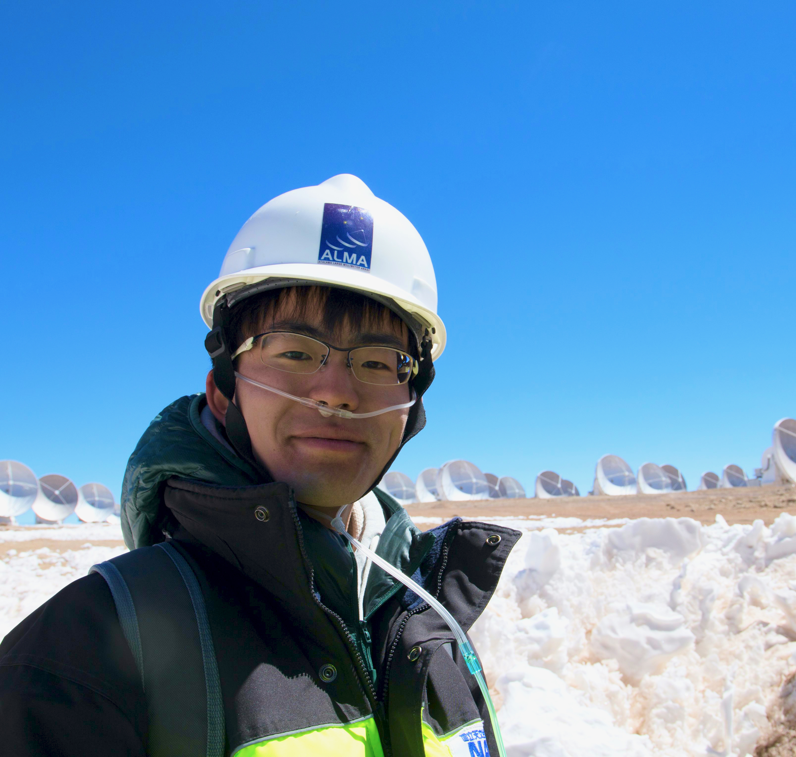

吉田 有宏
天文学を研究している大学院生です。

自己紹介
はじめまして。私は、総合研究大学院大学物理科学研究科天文科学専攻5年一貫制博士課程2年の
地球には人類が知るだけで約175万種の多様な生物が生息しています。なぜ、地球では生命が誕生し発展することができたのでしょうか。 太陽系には人類が知るだけで8個の惑星と5個の準惑星、多数の衛星や小天体があり、それぞれが個性的な環境を有しています。どのようにして、このような姿になったのでしょうか。 宇宙には人類が知るだけで5000個以上の惑星があります。地球と同じように生命を宿す惑星はあるのでしょうか。そこに人類のような「文明」は存在するのでしょうか。
これらの根源的な問いに答えるには、太陽系や太陽系外の惑星系がいつ・どこで・どのように形成されたのかを明らかにする必要があります。 そのために、私は惑星形成の現場である「原始惑星系円盤」の観測的研究を行なっています。
所属など
総合研究大学院大学 物理科学研究科 天文科学専攻 修士2年
国立天文台 科学研究部
Email: tomohiroyoshida.astro [at] gmail.com
ORCID: 0000-0001-8002-8473
Twitter: @tomyoshidastro
研究テーマ
関心のある研究テーマは以下の通りです。
- 原始惑星系円盤の物理・化学構造: 何がどこにどのくらいあって、どのように運動しているのか？
- 物質の起源と進化を追うために重要な同位体化学
- 機械学習的手法を用いた電波干渉計の像合成
- 星形成過程の観測的研究
論文
[筆頭]
-
A New Method for Direct Measurament of Isotopologue Ratios in Protoplanetary Disks: A Case Study of the 12CO/13CO Ratio in the TW Hya Disk
Tomohiro C. Yoshida, Hideko Nomura, Kenji Furuya, Takashi Tsukagoshi, Seokho Lee
Submitted to ApJ -
Multi-epoch Submillimeter Array Observations of the L1448C(N) Protostellar SiO Jet
Tomohiro Yoshida, Tien-Hao Hsieh, Naomi Hirano, Yusuke Aso
ApJ, 906, 112 (2021), ADS
[共著]
-
Detection of HC18O+ in a Protoplanetary Disk: Exploring Oxygen Isotope Fractionation of CO
Kenji Furuya, Takashi Tsukagoshi, Chunhua Qi, Hideko Nomura, L. Ilsedore Cleeves, Seokho Lee, Tomohiro C. Yoshida
ApJ, 026, 148 (2022), ADS
会議
[国際学会]
-
A New Method for Direct Measurament of Isotopologue Ratios in Protoplanetary Disks: A Case Study of the 12CO/13CO Ratio in the TW Hya Disk
Tomohiro C. Yoshida, Hideko Nomura, Kenji Furuya, Takashi Tsukagoshi, Seokho Lee
Oral, East Asian ALMA Science Workshop 2022,
20 Jan 2022, Online (hosted by Korea Astronomy and Space Science Institute (KASI)) -
A New Method for Direct Measurament of Isotopologue Ratios in Protoplanetary Disks: A Case Study of the 12CO/13CO Ratio in the TW Hya Disk
Tomohiro C. Yoshida, Hideko Nomura, Kenji Furuya, Takashi Tsukagoshi, Seokho Lee
Poster, Workshop on Interstellar Matter 2021
17-19 Nov 2021, Institute of Low Temperature Science, Hokkaido University, Japan
[国内学会]
-
分子ガス同位体比の新しい測定手法を用いたTW Hyaまわりの原子惑星系円盤における不均一な12CO/13CO比の発見
吉田有宏, 野村英子, 古家健次, 塚越崇, Seokho Lee
口頭, 新学術領域「星・惑星形成」2021年度大研究会,
2022年3月15日, オンライン -
原始惑星系円盤における分子ガス同位体比の新しい測定手法とそのTW Hya円盤の12CO/13CO比への応用
吉田有宏, 野村英子, 古家健次, 塚越崇, Seokho Lee
口頭, 日本天文学会2022年春季年会,
2022年3月3日, オンライン -
原始惑星系円盤における分子ガス同位体比の新しい測定手法とそのTW Hya円盤の12CO/13CO比への応用
吉田有宏, 野村英子, 古家健次, 塚越崇, Seokho Lee
口頭, 太陽系小天体若手研究会2021,
2021年11月11日, オンライン -
原始惑星系円盤における一酸化炭素同位体組成の測定可能性
吉田有宏, 野村英子, 古家健次, 塚越崇, Seokho Lee
口頭, 日本惑星科学会2021年秋季講演会,
2021年9月17日, オンライン -
原始惑星系円盤におけるHC18O+輝線の検出
古家健次, 塚越崇, 野村英子, 吉田有宏, Seokho Lee
口頭, 日本惑星科学会2021年秋季講演会,
2021年9月17日, オンライン -
原始惑星系円盤における一酸化炭素同位体組成の測定可能性
吉田有宏, 野村英子, 古家健次, 塚越崇, Seokho Lee
口頭, 日本天文学会2021年秋季年会,
2021年9月13日, オンライン -
ALMAによる原始惑星系円盤における一酸化炭素同位体組成の測定可能性
吉田有宏
口頭, 2021年度第51回 天文・天体物理若手夏の学校,
2021年8月24日, オンライン -
ALMAによる原始惑星系円盤における一酸化炭素同位体組成の測定可能性
吉田有宏, 野村英子, 古家健次, 塚越崇
口頭, 日本地球惑星科学連合2021年大会,
2021年6月4日, オンライン -
ALMA Dust Polarization Study toward Prestellar and Protostellar Sources in Orion
Satoko Takahashi, Kaho Morii, Tomohiro Yoshida, Masahiro Machida, Kohji Tomisaka, Paul T. P. Ho, Edward B. Fomalont, Josep-Miquel Girart, Kouichiro Nakanishi
口頭, 日本天文学会2019年春季年会,
2019年3月15日, 法政大学 -
リモートセンシングによるシカ食害地域の推定
吉田 有宏, 石橋 龍, 國行 彩斗, 冨田 涼華, 野並 義章
口頭, 日本地球惑星科学連合2015年大会,
2015年5月24日, 幕張メッセ -
リモートセンシングによるシカの食害検出のためのササのスペクトル計測
石橋 龍, 吉田 有宏, 國行 彩斗, 冨田 涼華, 野並 義章
口頭, 日本地球惑星科学連合2015年大会,
2015年5月24日, 幕張メッセ
その他
-
Multi-epoch SMA observations of the L1448C(N) protostellar jet
Tomohiro Yoshida, Tien-Hao Hsieh, Naomi Hirano, Yusuke Aso
Submillimeter Array Newsletter, Jul 2021, PDF
学歴
- 2021年4月 総合研究大学院大学物理科学研究科天文科学専攻 入学
- 2021年3月 京都大学理学部(宇宙物理系) 卒業
- 2017年3月 北海道札幌南高等学校 卒業
- 2014年3月 北海道室蘭市立翔陽中学校 卒業
サマースクールなど
-
2019年7-8月 ASIAA Summer Student Program 2019
@Institude of Astronomy and Astrophysics, Academia Sinica, Taipei, Taiwan -
2019年3月 国立天文台・総研大スプリングスクール
@国立天文台三鷹キャンパス -
2018年8月 国立天文台・総研大サマーステューデントプログラム
@国立天文台チリ観測所 -
2014-2015年 北海道大学Super Scientist Program
趣味とか
- 写真、ドライブ、天体観測、旅行、睡眠...